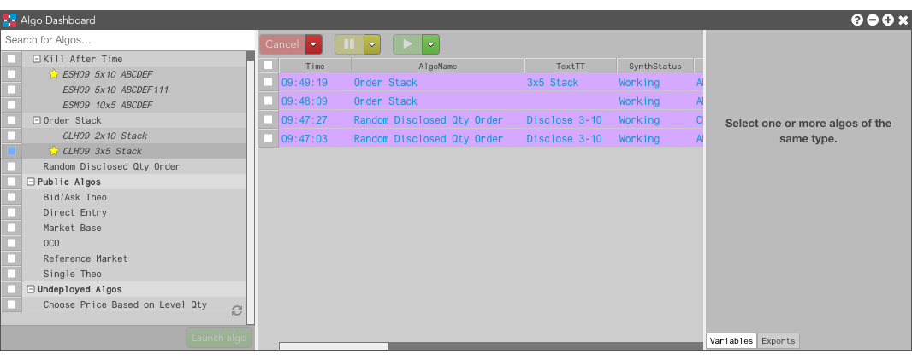

When you launch an algo from Algo Dashboard, you have an option to specify a custom name for the instance of that algo. By default, the instance name is blank for algos with no template and matches the name of the template, if one is used. If you launch multiple instances of a single algo, you can assign custom names for specific instances to help you identify them in the Algo Dashboard order pane and in the Order Book widget. The instance name is displayed in the TextTT column.

In this example: